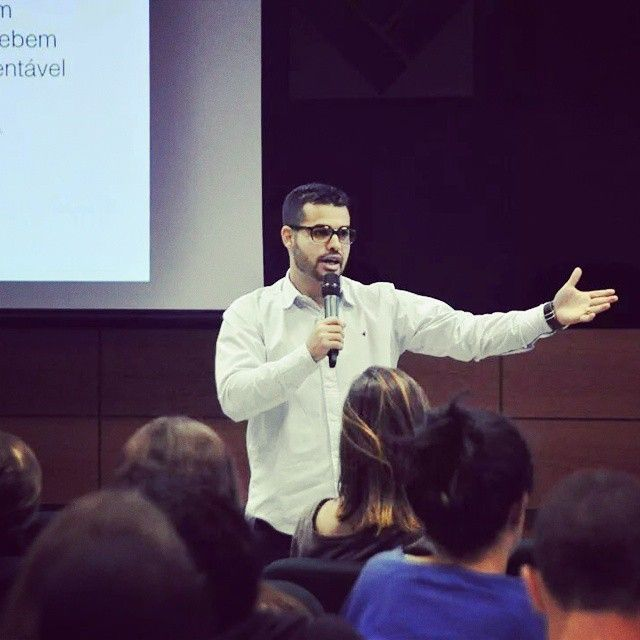

Equipe
Ana Torres
Coordenadora Geral

Mateus Fernandes
Gerente de Projetos
Marcos Silva
Assistente Social

Júlia Ribeiro
Psicóloga Voluntária

Voluntários
Equipe Completa
Transformando vidas através da empatia e ação social.
A Fundação Caminhos da Solidariedade é uma ONG dedicada a apoiar famílias em vulnerabilidade social, levando alimento, educação básica, capacitação profissional e atendimento humanitário para promover independência e dignidade.
| Nome do Projeto | Público Atendido | Ano de Início | Status |
|---|---|---|---|
| Casa de Passagem | Pessoas em situação de rua | 2019 | Ativo |
| Comunidade Nutri | Famílias de baixa renda | 2021 | Ativo |
| Recomeçar | Mães solo | 2020 | Concluído |
Coordenadora Geral
Gerente de Projetos
Assistente Social
Psicóloga Voluntária
Equipe Completa
Para voluntariado, dúvidas ou ajuda:
Email: contato@solidariedade.org